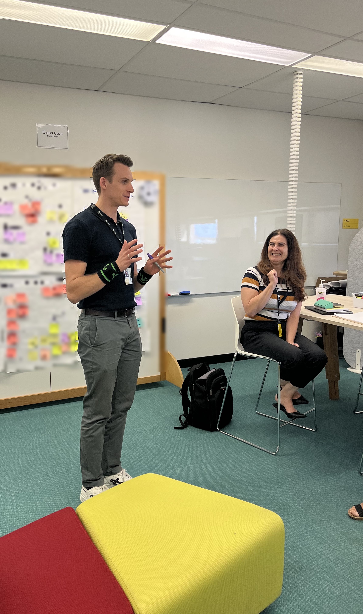

01How I help organisations
I help organisations make customer-centred decisions with confidence.
Customer research
I work with teams to build a deep understanding of what customers and key stakeholders need, value, and prioritise.
Strategic decision-making
I help teams translate research, data, and competing priorities into well-defined opportunities and validated decisions.
Stakeholder alignment
I facilitate structured conversations that build mutual understanding, empathy, and simple artefacts teams can move forward with.
02My approach
How I work
Empathy and engagement
I listen deeply to people and actively involve those closest to the challenge.
Empirical research
I use structured empirical methods to test assumptions, uncover patterns, and determine what to do next.
Multi-disciplinary collaboration
I create collaborative spaces where different perspectives can connect, challenge, and strengthen the work.

03Fields of expertise
What I do
Service Design
Designing services, experiences, and journeys around customer needs and organisational complexities.
Digital strategy
Shaping strategic direction for digital products, platforms, and services that create meaningful value.
Innovation and growth
Identifying opportunities, testing innovative ideas, and supporting teams to turn insight into future-ready value propositions.
04Previous industries
Where I’ve worked
Consulting
Strategy · innovation
Manufacturing
Service business models · digital transformation
Higher Education
IT governance · AI · human-centred design
Construction
Product-as-a-Service · digital technology
Startups
AI · platform businesses